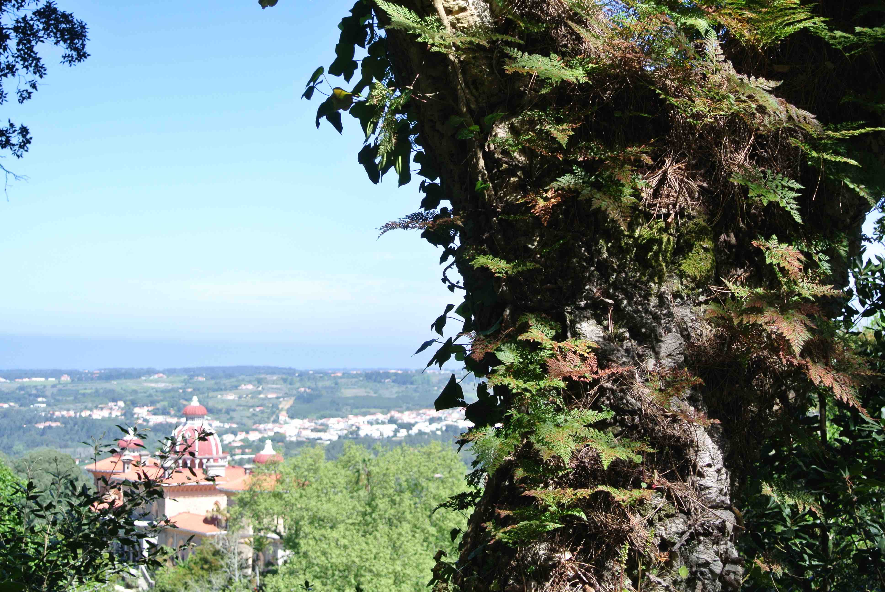
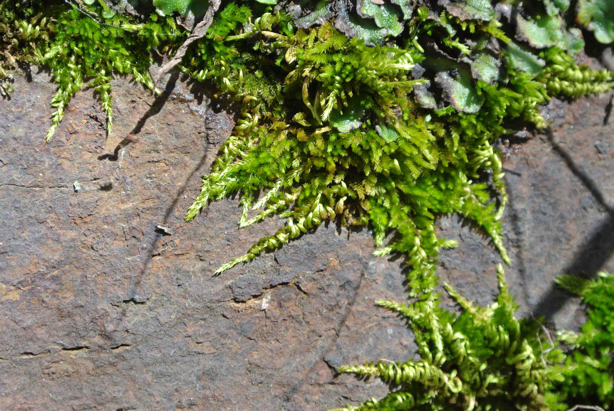
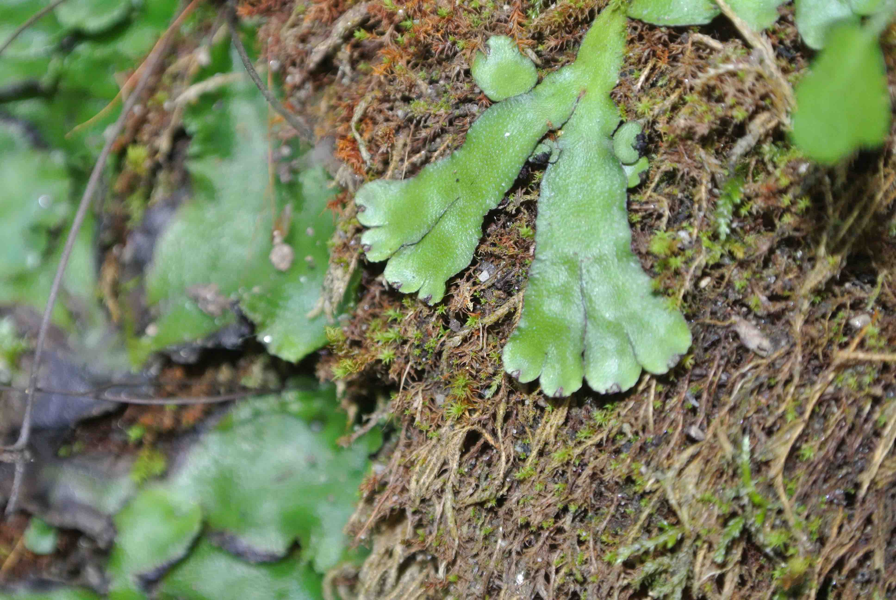
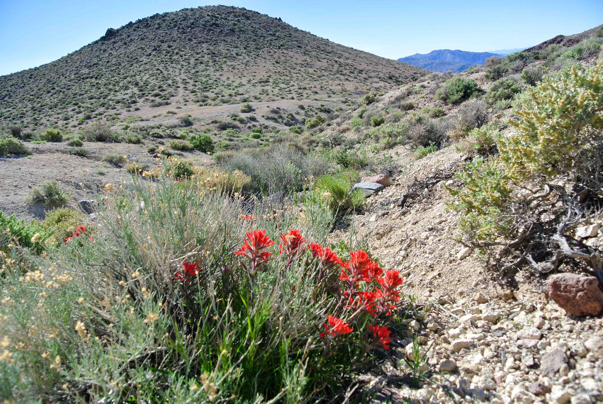
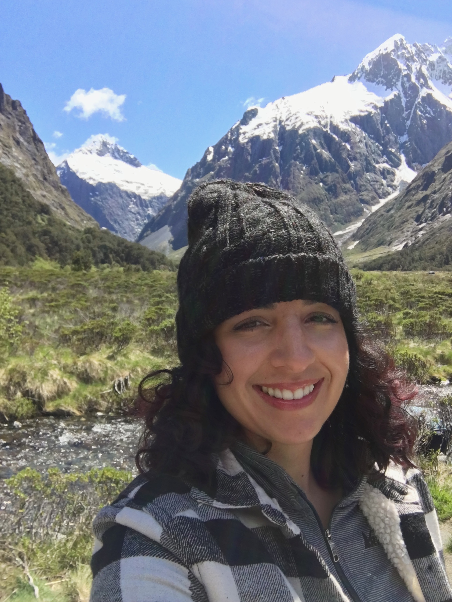
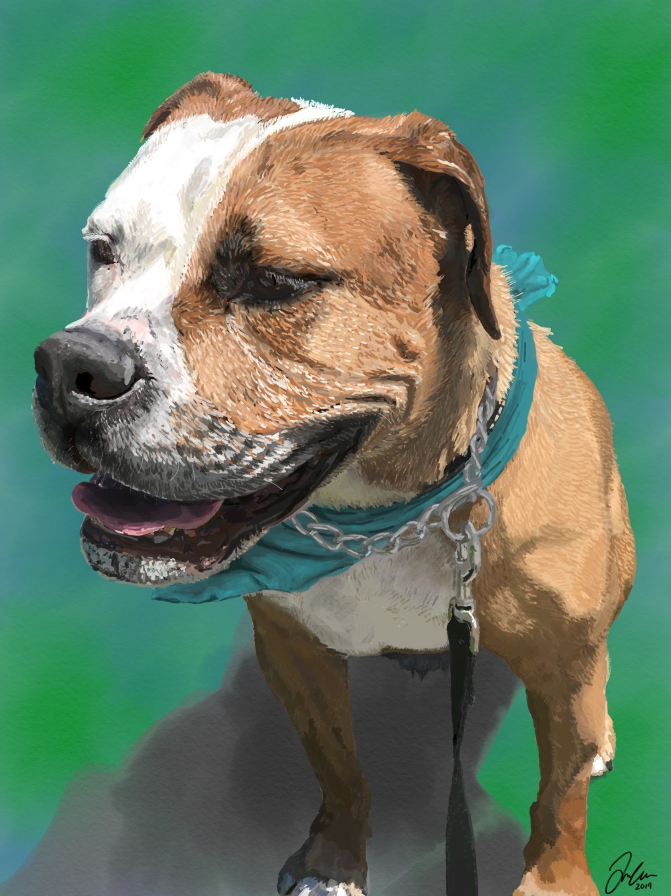

<meta name="viewport" content="width=device-width, initial-scale=1.0">

<section>
<br>
<h1>About me</h1>
	
	<a href="../img/corkoak.JPG" target="_blank"></a>
	<a href="../img/moss.JPG" target="_blank"></a>
	<a href="../img/thallus.JPG" target="_blank"></a>
	<a href="../img/deathvalley.jpg" target="_blank"></a>
		<br>
		<br>

	<p style="clear: both;">
<script language="javascript">
src="../imageLoad.js"
</script>

  	
  	<h2>I'm a PhD Candidate in Integrative Biology at UC Berkeley.</h2>
  	
  	
  	
	<p>When observing the natural world, I am driven to ask <i>how? How does it do that? How did this happen?</i> I am most fascinated by the very small: those organisms that are easily overlooked by macrobes like ourselves. I am also excited by extremophiles: those that can survive and thrive in conditions thought to be difficult for life itself. I find these interests come together easily in studying mosses. These small plants have found a way to only truly ‘live’ when conditions are right (that is, when enough water is present), and dry out to go completely inert when water is absent. For desert mosses that is most of the time! Yet, seemingly miraculously, dryland mosses are able to quickly begin to grow and thrive again, while recovering from damage that accumulated while they were desiccated and quiescent. I find this process inspiring and it intrigues me to think about the evolutionary, both micro and macro, implications of this lifestyle.</p>
	<br>

<h2>I'm an artist.</h2>
	<p>I've loved to paint and draw for as long as I can remember. As a high school student I went back-and-forth for a long time, trying to decide to go to art school or to pursue science. Ultimately, I chose to major in biology and head towards a career in research. However I still take art classes when I can and continue to paint as a hobby.</p>
	
<div class="image">

<div><center>A digital painting of my dog, Billy.</center></div>
</div>
<section>


